Pronto para dominar o campo de batalha com estilo e elegância? Conheça Zetian, a Imperatriz de Shendu, que combina magia em área (AoE) devastadora com controle de grupo, sendo ainda uma das magas mais fáceis de aprender e jogar! Seja você iniciante em Mobile Legends ou esteja buscando uma maga poderosa para a rota do meio com alto impacto e baixa complexidade, Zetian pode ser sua nova heroína favorita.
Neste guia, você vai descobrir os pontos fortes de Zetian, as melhores builds e estratégias para cada fase do jogo. Desde farmar com eficiência até eliminar inimigos com estilo, Zetian prova que não é preciso complexidade para ser letal. Vamos explorar o que faz essa Imperatriz renascida das cinzas se destacar.
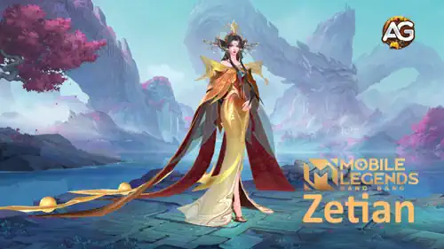
Guia da Zetian - Mobile Legends: Bang Bang, um jogo desenvolvido pela Moonton.
Quem é Zetian?
Zetian é a lendária Imperatriz de Shendu, um espírito fênix outrora adormecido que renasceu para proteger as Terras Fluviais de Cadia. Com sua origem divina e conexão profunda com poderes ancestrais, ela controla o campo de batalha com elegância e força mágica avassaladora.
Classe: Maga
Posição: Rota do Meio (Mid Lane)
Atributo Principal: Poder Mágico
O renascimento de Zetian lhe concedeu o poder de dominar magias em área e efeitos de controle que podem mudar o rumo das batalhas em equipe. Ela é ideal para jogadores que gostam de causar alto dano e controlar o ritmo da luta com bom posicionamento e uso preciso de habilidades.
Seu estilo de jogo gira em torno de limpar ondas de minions, atacar inimigos à distância e executar combos explosivos com facilidade. Apesar de sua durabilidade ser mediana, a facilidade de uso e sua capacidade de zonear inimigos a tornam muito acessível para iniciantes e uma escolha confiável em partidas ranqueadas.
Como Jogar com Zetian em Mobile Legends
Domine Zetian com este guia estratégico para iniciantes. Aprenda a dominar sua rota e brilhar nas lutas em equipe com graça e poder divinos!
Estratégia no Início do Jogo
No início da partida, foque em farmar com segurança na Rota do Meio. O Golpe da Fênix é essencial para limpar rapidamente as ondas de minions, então priorize essa habilidade. Mantenha-se sempre atrás dos seus minions e use as Ondas da Fênix para pressionar o inimigo sem se expor. Evite jogadas arriscadas o objetivo é acumular ouro e experiência de forma constante.
Não se esqueça: sua passiva Arma Celestial concede escudo e proteção contra empurrões se inimigos se aproximarem demais. Use sua torre como zona segura e só comece a rotacionar para outras rotas após alcançar o nível 4 e desbloquear a Fúria da Fênix. É aí que você se torna uma ameaça real!
Estratégia no Meio do Jogo
Quando todas as suas habilidades estiverem desbloqueadas, é hora de rotacionar e apoiar outras rotas. Use Mergulho da Fênix para zonear inimigos ou iniciar lutas reduzindo a defesa mágica deles. Sempre acompanhe com o Golpe da Fênix para causar grande dano em área.
Nas lutas em equipe, Zetian brilha quando fica atrás da linha de frente. Sua Fúria da Fênix pode mudar o rumo da batalha use-a quando vários inimigos estiverem agrupados para atordoá-los e revelar suas posições. Comunique-se com o time antes de iniciar para maximizar o impacto.
Lembre-se: mesmo que você não consiga abates, você contribui com lentidão, revelações, atordoamentos e redução de dano. Toda ação conta!
Estratégia no Final do Jogo
No fim do jogo, Zetian se torna uma poderosa maga de controle de área. Fique sempre com seu time e evite entrar sozinho na selva ou nas rotas laterais um erro pode custar a partida!
Nas lutas completas, posicione-se na retaguarda e execute seu combo: Mergulho da Fênix ➜ Golpe da Fênix ➜ Fúria da Fênix. Se for bem sincronizado, você enfraquece toda a equipe inimiga para seus aliados finalizarem.
Ao avançar nas rotas, use o Golpe da Fênix para eliminar super minions rapidamente e apoiar o cerco final. E não se esqueça: seu roubo de feitiço pode manter sua vida durante as lutas, especialmente se os inimigos não conseguirem se aproximar.
🎯 Dica: Nunca subestime suas habilidades de visão. Fúria da Fênix e Mergulho da Fênix podem revelar inimigos escondidos, dando uma vantagem estratégica enorme para seu time!
Prioridade de Evolução das Habilidades da Zetian - Mobile Legends: Bang Bang
É novo com a Zetian? Aqui está um guia amigável de evolução de habilidades para te ajudar a ficar mais forte e fazer melhores escolhas em cada partida.
Zetian - Armamento Celestial: Mobile Legends
Essa habilidade passiva funciona automaticamente. Ela concede à Zetian um escudo protetor e empurra os inimigos para longe caso se aproximem demais. Ela também ganha Roubo de Feitiço ao usar suas habilidades ofensivas.
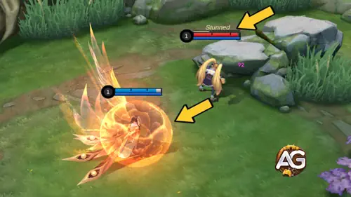
Habilidade Armamento Celestial, Mobile Legends: Bang Bang.
Zetian - Golpe da Fênix: Mobile Legends
Essa é a principal habilidade de dano da Zetian. Ela lança até três Ondas da Fênix consecutivas. A terceira é maior e puxa levemente os inimigos. Você pode se mover e usar outras habilidades durante o lançamento, o que a torna bem flexível e divertida de usar!
Prioridade de Evolução:Muito Alta – Essa habilidade deve ser maximizada primeiro. Ela causa o dano mais consistente, ajuda a farmar os minions e é ótima para incomodar os inimigos nas lutas.
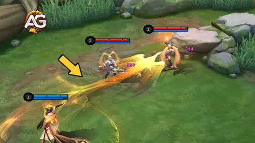
Habilidade Golpe da Fênix, Mobile Legends: Bang Bang.
Zetian - Mergulho da Fênix: Mobile Legends
Essa habilidade invoca um Espírito da Fênix que causa dano contínuo e enfraquece inimigos em uma grande área. Você pode até fazer o espírito atacar uma segunda vez! Ela ajuda a controlar espaços, especialmente em lutas em grupo.
Prioridade de Evolução:Média-Alta – Evolua essa habilidade depois do Golpe da Fênix. É excelente para reduzir a defesa mágica dos inimigos e deixá-los mais lentos, mas não causa tanto dano quanto a Habilidade 1.
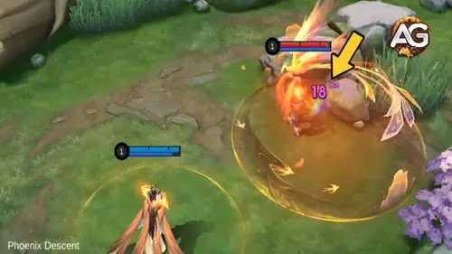
Habilidade Mergulho da Fênix, Mobile Legends: Bang Bang.
Zetian - Fúria da Fênix: Mobile Legends
Essa é a habilidade suprema (ultimate) da Zetian. Ela aumenta a velocidade da equipe e revela todos os inimigos. Ao mesmo tempo, atordoa e causa dano a todos os heróis inimigos. É ótima para iniciar lutas em equipe ou virar o jogo.
Prioridade de Evolução:Alta – Sempre evolua essa habilidade nos níveis 4, 8 e 12. Ela é poderosa para coordenação de equipe e controle do campo de batalha.
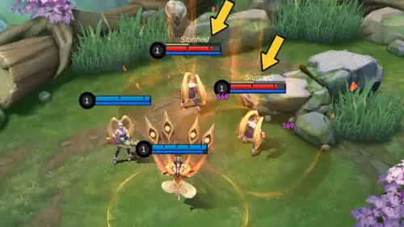
Habilidade Fúria da Fênix, Mobile Legends: Bang Bang.
Melhores Combos da Zetian - Mobile Legends
Descubra os combos de dano mais poderosos da Zetian em Mobile Legends, perfeitos para dominar as lutas em equipe e controlar a Rota do Meio com facilidade.
Combos para Lutas em Equipe
Passo 1: Fúria da Fênix
Inicie a luta usando sua Ultimate. Ela acelera todo o seu time e atinge todos os inimigos com um poderoso ataque em área (AoE) que os atordoa. Isso dá à sua equipe a oportunidade de iniciar o combate enquanto os inimigos estão lentos e vulneráveis.
Passo 2: Mergulho da Fênix
Logo após a Ultimate, invoque o Espírito da Fênix com a Habilidade 2 para desacelerar os inimigos e reduzir sua Defesa Mágica. Isso os torna alvos mais fáceis para seus aliados e aumenta seu dano total.
Passo 3: Golpe da Fênix
Lance o Golpe da Fênix enquanto se move para se manter seguro e continuar pressionando. Essa habilidade atinge três vezes consecutivas e puxa os inimigos levemente no último golpe, dificultando a fuga deles.
Passo 4: Mergulho da Fênix (Reutilização)
Se os inimigos tentarem fugir, use a reutilização da sua segunda habilidade para enviar o espírito da Fênix atrás deles. Isso aplica outro efeito de lentidão e causa dano extra muitas vezes garantindo a eliminação.
Combos para a Fase de Rotas
Passo 1: Mergulho da Fênix
Comece posicionando o Espírito da Fênix próximo ao seu oponente de rota. Isso o desacelera e reduz sua Defesa Mágica, o que aumenta o dano dos seus próximos ataques.
Passo 2: Golpe da Fênix
Em seguida, use o Golpe da Fênix. Lance a habilidade enquanto se reposiciona isso ajuda você a se manter móvel enquanto aplica forte dano em área. Tente acertar o inimigo com todas as três ondas.
Passo 3: Mergulho da Fênix (Reutilização)
Se o inimigo tentar sair da área do espírito, use a reutilização da habilidade para lançar a Fênix diretamente sobre ele. Isso aplica mais uma lentidão e causa um último golpe de dano. Ótimo para zonear ou forçar o recuo.
Como Counterar Zetian em Mobile Legends
Descubra os melhores heróis para neutralizar Zetian explorando suas fraquezas em posicionamento, conjuração de habilidades e limitações de mobilidade.
Atlas
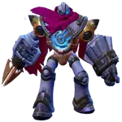
Atlas pode mergulhar diretamente na retaguarda da Zetian com o Perfect Match e prendê-la com Fatal Links, interrompendo sua conjuração e ignorando o empurrão passivo dela graças à imunidade a controle de grupo durante o combo.
Gusion consegue eliminar Zetian antes mesmo que ela reaja, usando seu combo rápido (Sword Spike + Incandescence). Os escudos dela não são fortes o suficiente para resistir ao seu alto dano explosivo de alvo único.
Helcurt
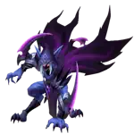
A Dark Night Falls do Helcurt cancela a visão global da ultimate da Zetian. Seu silêncio também impede que ela conjure qualquer habilidade, tornando-a extremamente vulnerável em confrontos diretos.
Joy
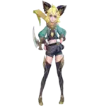
Joy é altamente móvel e imune a controle de grupo durante seu combo supremo. Ela pode desviar das habilidades da Zetian e causar dano contínuo enquanto evita atordoamentos e lentidões.
Lancelot
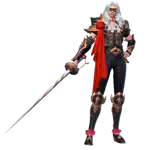
Lancelot consegue atravessar as zonas de dano da Zetian com Puncture e Thorned Rose, eliminando-a rapidamente antes que ela finalize suas conjurações. Sua mobilidade anula o efeito de empurrão da passiva dela.
Saber
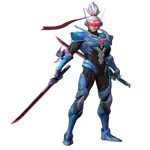
O Triple Sweep do Saber pode eliminar instantaneamente a Zetian antes que ela ative seu escudo ou controle de grupo. Sua capacidade de isolar alvos frágeis o torna uma ameaça direta à sobrevivência dela.
Valentina
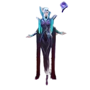
Valentina pode copiar a ultimate da Zetian com I Am You, transformando sua arma mais forte contra o próprio time dela. Além disso, possui grande mobilidade e dano à distância para fazer frente à presença de rota da Zetian.
Melhor Build da Zetian – Mobile Legends
Aumente o dano mágico em área (AOE) da Zetian, a eficiência de recarga e sua sobrevivência com a build ideal para dominar todas as fases da partida.
Botas Arcanas
Botas Arcanas: Aumentam a velocidade de movimento e concedem Penetração Mágica para ajudar Zetian a causar mais dano no início do jogo.
Livro Mágico
Livro Mágico: Excelente item de início de jogo para redução de recarga e regeneração de mana, permitindo que Zetian use habilidades com mais frequência sem ficar sem recursos.
Relógio do Destino
Relógio do Destino: Fornece aumento gradual de HP e Poder Mágico, tornando Zetian mais resistente e aumentando seu potencial de dano explosivo conforme o jogo avança.
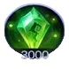
Cristal Mágico
Cristal Mágico: Maximiza o Poder Mágico bruto e amplifica todo o dano das habilidades da Zetian, sendo especialmente eficaz em lutas de meio e fim de jogo.
Varinha Brilhante
Varinha Brilhante: Adiciona dano contínuo baseado no HP do inimigo, ideal para poke e para causar dano constante em tanques ou heróis com regeneração.
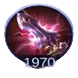
Glaive Divina
Glaive Divina: Destroi a defesa mágica inimiga, essencial contra composições tanques ou inimigos com itens de resistência mágica.
Prós e Contras da Zetian – Mobile Legends: Bang Bang
✅ Prós
Excelente dano mágico em área com forte limpeza de rota.
Habilidade passiva causa recuo, atordoamento e concede escudo, oferecendo defesa natural contra atacantes corpo a corpo.
Grande potencial de roubo de feitiço (spell vamp), garantindo sustentação em lutas prolongadas.
Ultimate concede controle de grupo global e aumento de velocidade de movimento para o time, ideal para lutas em equipe.
Baixa dificuldade de uso, sendo acessível para jogadores iniciantes.
❌ Contras
Baixa mobilidade e sem habilidade de escape confiável, tornando-a vulnerável a assassinos.
Ultimate tem tempo de recarga longo e pode ser anulada ou copiada (ex.: por Valentina).
Depende fortemente de bom posicionamento e consciência de mapa para não ser pega desprevenida.
O escudo e os efeitos da passiva têm tempo de recarga, deixando brechas de vulnerabilidade.
Requer bom timing para usar o segundo cast de Mergulho da Fênix de forma eficaz.
Conclusão do Guia da Zetian
Zetian é uma maga poderosa e elegante que brilha quando posicionada com sabedoria e jogada com paciência. Seu conjunto de habilidades permite controlar o campo de batalha com dano em área massivo, utilidade em equipe e defesas passivas que punem inimigos descuidados. Seja você um jogador novo ou um estrategista experiente, Zetian oferece uma curva de aprendizado suave e uma jogabilidade recompensadora. Domine seus combos, gerencie bem os tempos de recarga e você verá cada batalha virar a seu favor com graça e fogo. Abrace a Imperatriz Fênix e deixe seus inimigos queimarem em retribuição divina!
Você gostou do nosso Guia de #################? Há algo que não entendeu ou gostaria de sugerir mudanças? Convidamos você a se juntar à nossa sessão de comentários na página do Alexandre Games Blog. Não hesite em expressar sua opinião, clarificar suas dúvidas e compartilhar sua sugestões. Clique no botão abaixo para começar: